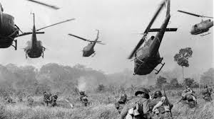

Conflicto en la península de Indochina que tuvo lugar entre mediados de los cincuenta y mediados de los setenta y que enfrentó a los EE.UU. y el gobierno de Vietnam del Sur por un lado, contra Vietnam del Norte y las guerrillas comunistas que actuaban en Vietnam del Sur por otro. La guerra terminó extendiéndose también a Laos y Camboya. La guerra del Vietnam fue la más larga de la historia norteamericana, supuso para este país una experiencia de fracaso y frustración, constituyendo, sin lugar a dudas, el más serio fracaso de EE.UU. en la guerra fría.
El inicio de la implicación americana se remonta a inicios de los cincuenta cuando apoyaron los desesperados intentos de Francia por mantener su presencia colonial en Indochina frente a las fuerzas comunistas del Vietminh. La derrota francesa y los Acuerdos de Ginebra de 1954, que consagraron la partición de Vietnam en dos, llevaron a que Washington volcara su apoyo en el régimen anticomunista de Vgo Dinh Diem en Vietnam del Sur que hacía frente al Vietnam del Norte comunista, apoyado por la URSS.
La corrupción de Diem hizo a su régimen crecientemente impopular y finalmente fue derrocado y asesinado por sus propios militares en 1963. Mientras tanto se había creado en Vietnam del Sur el Frente Nacional de Liberación (FNL) donde se aglutinaba toda la oposición incluyendo los comunistas.
En 1964, la situación parecía desesperada para Vietnam del Sur. EE.UU., alegando como justificación el incidente de Tonkín contra su destructor Maddox el 2 de agosto de 1964, inició una intervención abierta. Se pasó de 4000 soldados norteamericanos en 1962 a casi 500.000 en 1967. Los bombardeos masivos, el uso de agentes químicos, la crueldad de la primera guerra retrasmitida por los medios de comunicación hicieron enormemente impopular la política de EE.UU. en el Tercer Mundo, el bloque comunista y en partes significativas de la opinión pública occidental. Dentro del propio país, la oposición a la guerra se extendió entre la juventud ligándose a movimientos contra el sistema, como el movimiento "hippie".
Tras la ofensiva vietnamita del Têt en 1968, el presidente Johnson decidió el progresivo desvinculamiento del conflicto y la búsqueda de una solución negociada. Tras una compleja fase de negociaciones y enfrentamientos militares, se firmó en París en enero de 1973 un acuerdo de paz. En agosto de 1973, el Congreso norteamericano prohibió cualquier reanudación de la intervención norteamericana. La retirada de las tropas estadounidenses hizo que el régimen de Vietnam del Sur se derrumbara inmediatamente. La ofensiva final comunista tuvo lugar en la primavera de 1975. El 17 de abril, Phnom Penh cayó en manos de los Khmers Rojos y el 30 los comunistas tomaron Saigón. La guerra había terminado.

La derrota supuso un verdadero trauma para EE.UU. 58.000 muertos, 300.000 heridos, centenares de miles de soldados con una amplia adicción a las drogas y con serios problemas de adaptación a la vida civil, el orgullo de potencia herido... Lo que se vino a denominar el "síndrome de Vietnam" supuso en el corto plazo una gran renuencia a la intervención militar exterior por parte de la potencia norteamericana.